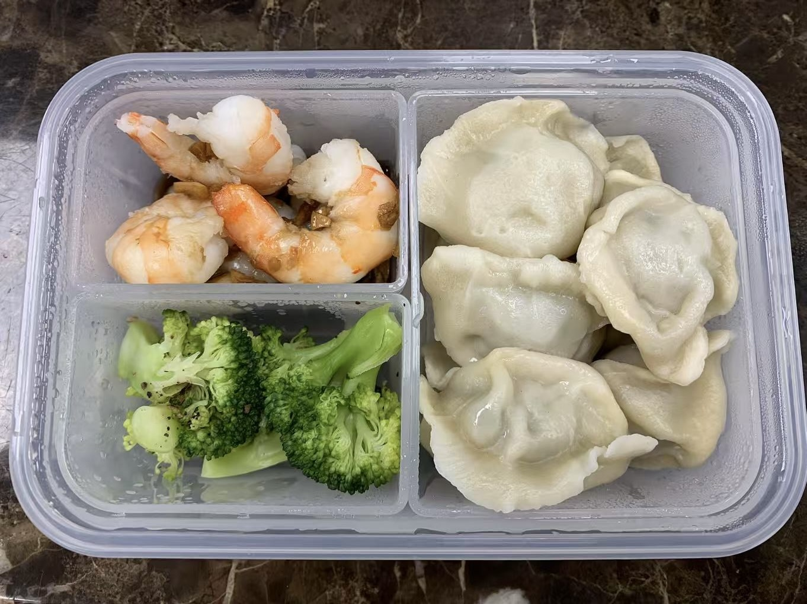

Top 10 Waste-Free Lunch Swaps
Start small — one swap each week. By the end of the term, your lunch kit will be nearly waste-free.

Original photo by Suzy Lin — a reusable lunch container example.
- Use reusable snack bags instead of plastic ones.
- Bring a stainless steel water bottle instead of juice boxes.
- Pack cloth napkins instead of paper ones.
- Choose fresh fruit instead of packaged snacks.
- Pack leftovers in reusable containers.
- Buy in bulk to reduce packaging.
- Use beeswax wraps instead of plastic wrap.
- Compost food scraps at home or school.
- Teach kids about recycling symbols.
- Share your success with others!
Quick FAQs
Do reusable containers actually save money?
Yes — over a term, reusables replace dozens of single-use bags and wraps, and leftovers reduce food waste.
Are beeswax wraps safe for kids?
They’re designed for food contact. Avoid hot foods and wash with cool water and mild soap.
What if my school doesn’t compost?
Bring scraps home for your bin, or check if the municipality offers a program your school can join.
Ready to start? Try one swap this week and share your success.
Invite us to your school